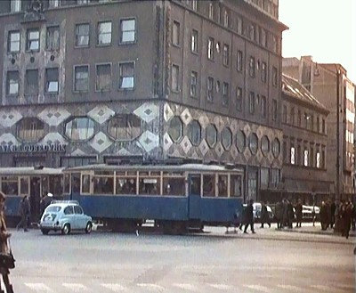
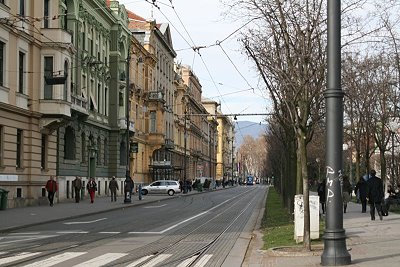
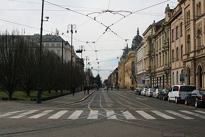

Antuna Mihanovića

photo: Davor Djurinic, March 2nd, 2010
MAN
IN A SUITCASE: Somebody
Loses...Somebody Wins (John Glen: April 1967)
Ruth Klinger is taken to the secret police headquarters in East Berlin
to be questioned (corner of Antuna Mihanovića and Jurja Haulika).
(Identified by Greg Mishevski, aka SainT on the Britmovie Forum,
February 22nd, 2010)

photo: Davor Djurinic, May 11th, 2010
THE
BARON: Enemy of the
State (Jeremy Summers: December 1965)
A British agent is picked up by the secret police in Eastern Europe
(taken from the number 16 Ilica, looking west).
(Confirmation that this is Zagreb from Greg Mishevski, aka SainT on the
Britmovie Forum,
February 12th, 2010)

THE
BARON: Enemy of the
State (Jeremy Summers: December 1965)
John Mannering and his assistant, Cordelia Winfield, are trapped in the
Eastern European country.
(Identified by Yvon at the Internet
Movie Car Database)

photo: Davor Djurinic, March 2nd, 2010
THE
BARON: Enemy of the
State (Jeremy Summers: December 1965)
A British agent is picked up by the secret police in Eastern Europe
(corner of Trg kralja Tomislava and Trg Ante Starčevića, looking north).
(Confirmation that this is Zagreb from Greg Mishevski, aka SainT on the
Britmovie Forum,
February 12th, 2010)

photo: Davor Djurinic, March 2nd, 2010
THE
BARON: Enemy of the
State (Jeremy Summers: December 1965)
Zagreb, Croatia (then Yugoslavia) - A British agent is picked up by the
secret police in Eastern Europe (corner of Trg Ante Starčevićaand Trg
kralja Tomislava).
(Confirmation that this is Zagreb from Greg Mishevski, aka SainT on the
Britmovie Forum,
February 12th, 2010)
Return to Index